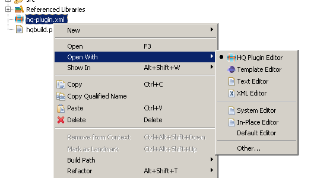

After new project is created, HQ Plug-In editor is automatically opened. For files named as 'hq-plugin.xml', this editor is the default. However eclipse allows you to open files with various editor. If HQ Plug-In editor is not opened as default, select matching editor from Open With -> HQ Plugin Editor.
